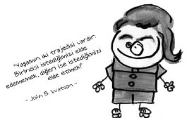
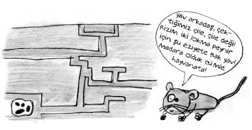
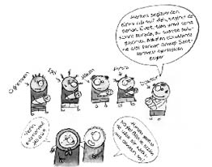

John Broadus Watson (1878-1958)
Amerikalı psikolog. Davranışçılık ekolünün kurucusudur. Watson, gelmiş geçmiş en yakışıklı psikoloji profesörü olarak bilinir.
Yoksul bir ailenin çocuğu olarak dünyaya gelen Watson, katılık ölçüsünde dindar bir anne ile ayyaş, evlilik dışı ilişkiler peşinde koşan ve onu terk eden bir babanın çocuğudur. Oldukça problemli, şiddet eğilimli bir çocukluk dönemi geçirmiştir. Başarılı bir öğrenci olmak bir yana, birçok kavgaya karışmış ve iki kez de ateşli silah kullanmaktan tutuklanmıştır.
Öğrenciyken bu kadar haylaz olan Watson’ın öğretmenlik yılları da uslu geçmez. Sınav kâğıdına, soruların cevaplarını yazmak yerine uzun bir aşk şiiri yazan öğrencisi Mary Ickes ile gizlice evlenir. İlk başta güzel bir evlilikleri olur, bir kız ve bir erkek çocukları dünyaya gelir. Fakat Watson da babası gibi evliyken bir dizi kadınla gönül ilişkilerine girer. Bir gün karısı onun cebinde bir aşk mektubu bulur ve bu sebeple boşanırlar.

Yaşadığı seks skandalları nedeniyle üniversitedeki görevinden de alınan Watson, reklâmcılık işine soyunur. Davranışçı teknikleri reklâmcılık alanında kullanmaya başlar. Ölümünden kısa bir süre önce ise yayımlanmamış bütün çalışmalarını kendi elleriyle yakar.
Gözlemlerini ve çalışmalarını ağırlıklı olarak kendi çocukları üzerinde yapmıştır. Belki de bu yüzden, çocuklarıyla ilişkisi de hiç iyi olmamıştır. Birer gözlem ve deney aktörü olarak kullanılan bu çocuklar intihar etmiş, bir torunu ise intiharın eşiğinden dönmüştür.
Küçük Albert çalışması
Watson Küçük Albert adını verdiği bir çocukta yüksek zil sesini kullanarak şartlı korku yaratmıştır. Albert önceleri ani yüksek sesler dışında hiçbir şeyden korkmaz, koç gibidir. Watson bir beyaz tavşanı çocuğun kucağına koyar, bebek Albert hiç korkmadan tavşanla oynar. Sonra başına koyar, asistanı da o esnada bebeğin başına yakın bir yerde şiddetli sesler çıkarır. Bir hafta sonra aynı eylem tekrar edilir. Daha sonra çocuğa tekrar tavşan gösterildiğinde çocuk fena halde korkar! Hatta zavallım herhangi bir kürklü nesne gösterildiğinde de korkar olmuştur. Watson bu deneyden şu sonucu çıkarır: Davranışlar kalıtımsal değildir, kişinin çocukluktan beri uyarıcılara karşı geliştirdiği tepkilerin toplamından ibarettir.
Sezercik Watson’a karşı…
Watson’ın düşüncelerini yine Sezercik çürütmüştür. Küçük Sezer, Erol Taş tarafından kaçırılır. Yıllarca kötü bir çocuk olması için büyütülür. Fakat Sezercik, Erol Taş ne yaparsa yapsın değişmez. Hatta o kadar ki, çok fakir olduğu halde, çok para karşılığı satacağı eşeği satın alacak şişman çocuğun, “Binicem üstüne, vurucam kırbacı, vurucam kırbacı!” demesi üzerine eşeği satmaktan vazgeçer!
Ne Demiş Watson…
• Bana kendi dünyamda yetiştirmem için bir düzine sağlıklı bebek verin. Bu çocuklardan herhangi birini yetenekleri, eğilimleri, zekâları ve ırklarından bağımsız olarak, istediğim herhangi bir şekilde yetiştirebilirim.
• Kardeşinin dahi hoşlanmadığı bir şeyden başka yerde bahsedilirse bu da dedikodudan sayılır.
• Karnı tok olan için bir dilim ekmek hiçbir şey ifade etmez, ama aç olan için çok şey ifade eder.
Bir de deneyler vardır…
Psikolojinin yöntemlerinden biri de deneydir.
Deney yapmak için gerekli malzemeler: 1 adet deney grubu, 1 adet kontrol grubu ve alabildiği kadar denek şeklindedir.
Malum, üzerinde deney yapılan canlı varlığa “denek” denir. Deneklerle ilgili cümleler genellikle şöyle başlar: Fareler üzerinde yapılan bir deneyde... Kafesteki bir fareye önce ışık yakılmakta, sonra elektrik verilmektedir... 12 saat aç bırakılan kediler... Labirentin içine konulan bir farenin...

Bu tip, hayvanlar üzerinde yapılan deneylere karşı panter Emel ve benzeri hayvan severlerin ayaklandığı çok olmuş, hatta felçli bir hayvan severin sırf bu deneylere isyan ederken ayaklandığı ve yürümeye başladığı görülmüştür.
Fakat bu psikolojik deneyler sadece hayvanlara değil insanlara da uygulanmış, denek olarak kullanılan çocuklar ve insanlar da onlarca saat aç bırakılmış, gürültülü bir ortamda ders çalıştırılıp, her şeyden yalıtılmış bir ortamda elleri kolları bağlı tutulmuşlardır.
Özellikle deneylere maruz kalanlar ise tek yumurta ikizlerdir. Bunların çilesi daha bebekken başlar. Örneğin tek yumurta ikizlerinden biri doğar doğmaz bir hırsıza diğeri bir hâkime verilir ve yıllar sonra hangi mesleği seçeceğine, nasıl bir karakteri olacağına bakılır. Bu durum çocuklara büyüdükleri zaman nasıl anlatılır orasını bilemiyoruz, belki şöyle olabilir: “Senin annen bir denekti yavrum…”
